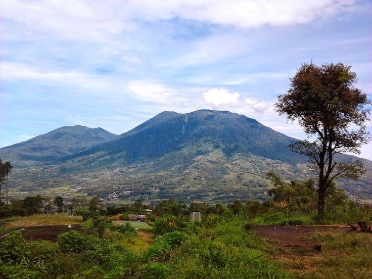
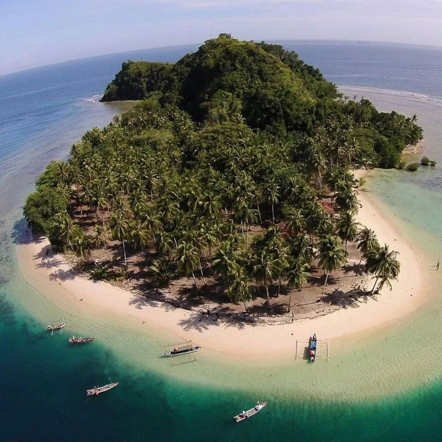
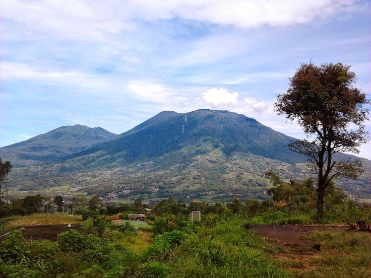
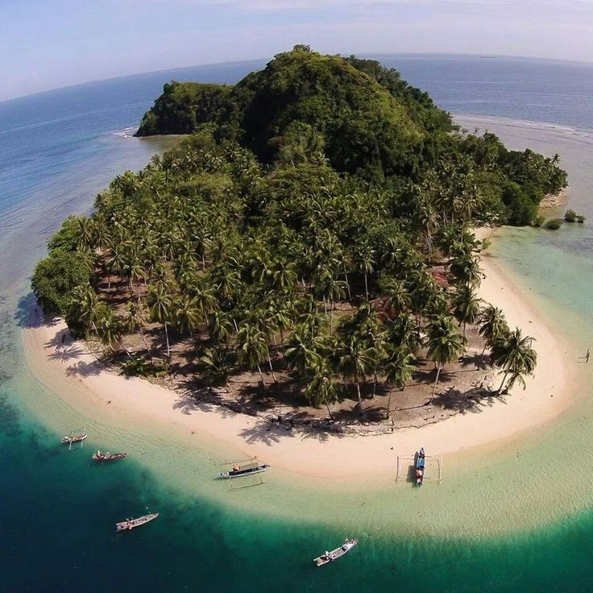

Travelling Wisata Sumbar
Sumatera Barat
Sumatra Barat adalah sebuah provinsi di Indonesia yang terletak di Pulau Sumatra dengan Padang sebagai ibu kotanya. Provinsi Sumatra Barat terletak sepanjang pesisir barat Sumatra bagian tengah, dataran tinggi Bukit Barisan di sebelah timur, dan sejumlah pulau di lepas pantainya seperti Kepulauan Mentawai.
Read More → 



Pulau Mentawai
Kabupaten Kepulauan Mentawai adalah salah satu kabupaten yang terletak di provinsi Sumatra Barat, Indonesia. Kabupaten ini dibentuk berdasarkan UU RI No. 49 Tahun 1999 dan dinamai menurut nama asli geografisnya.
Read More →Search
Kategori Wisata Sumbar
Orang Minangkabau
Minangkabau atau disingkat Minang : merujuk pada entitas kultural dan geografis yang ditandai dengan penggunaan bahasa, adat yang menganut sistem kekerabatan matrilineal, dan identitas agama Islam. Secara geografis, Minangkabau meliputi daratan Sumatra Barat, separuh daratan Riau, bagian utara Bengkulu, bagian barat Jambi, pantai barat Sumatra Utara, barat daya Aceh, dan Negeri Sembilan di Malaysia. Dalam percakapan awam, orang Minang sering kali disamakan sebagai orang Padang. Hal ini merujuk pada nama ibu kota provinsi Sumatra Barat, yaitu Kota Padang. Namun, mereka biasanya akan menyebut kelompoknya dengan sebutan urang awak yang dimaksudkan sama dengan orang Minang itu sendiri.
Menurut A.A. Navis, Minangkabau lebih merujuk kepada kultur etnis dari suatu rumpun Melayu yang tumbuh dan besar karena sistem monarki serta menganut sistem adat yang dicirikan dengan sistem kekeluargaan melalui jalur perempuan atau matrilineal, walaupun budayanya sangat kuat diwarnai ajaran agama Islam. Thomas Stamford Raffles, setelah melakukan ekspedisi ke pedalaman Minangkabau tempat kedudukan Kerajaan Pagaruyuang, menyatakan bahwa Minangkabau ialah sumber kekuatan dan asal bangsa Melayu, yang kelak penduduknya tersebar luas di Kepulauan Timur.
Masyarakat Minang bertahan sebagai penganut matrilineal terbesar di dunia. Selain itu, etnis ini telah menerapkan sistem proto-demokrasi sejak masa pra-Hindu dengan adanya kerapatan adat untuk menentukan hal-hal penting dan permasalahan hukum. Prinsip adat Minangkabau tertuang dalam pernyataan Adat basandi syarak, syarak basandi Kitabullah (Adat bersendikan hukum, hukum bersendikan Alquran) yang berarti adat berlandaskan ajaran Islam.